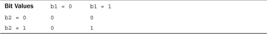

To avoid terminal obesity, the main text of this book doesn’t cover three groups of operators. The first group consists of the bitwise operators, which let you manipulate individual bits in a value; these operators were inherited from C. The second group consists of two-member dereferencing operators; they are C++ additions. The third group includes operators added by C++11: alignof and noexcept. This appendix briefly summarizes these operators.
The bitwise operators operate on the bits of integer values. For example, the left-shift operator moves bits to the left, and the bitwise negation operator turns each 1 to a 0 and each 0 to a 1. Altogether, C++ has six such operators: <<, >>, ~, &, |, and ^.
The left-shift operator has the following syntax:
value << shift
Here value is the integer value to be shifted, and shift is the number of bits to shift. For example, the following shifts all the bits in the value 13 three places to the left:
13 << 3
The vacated places are filled with zeros, and bits shifted past the end are discarded (see Figure E.1).
Figure E.1. The left-shift operator.
Because each bit position represents a value twice that of the bit to the right (see Appendix A, “Number Bases”), shifting one bit position is equivalent to multiplying the value by 2. Similarly, shifting two bit positions is equivalent to multiplying by 22, and shifting n positions is equivalent to multiplying by 2n. Thus, the value of 13 << 3 is 13×23, or 104.
The left-shift operator provides a capability often found in assembly languages. However, an assembly language left-shift operator directly alters the contents of a register, whereas the C++ left-shift operator produces a new value without altering existing values. For example, consider the following:
int x = 20;
int y = x << 3;
This code doesn’t change the value of x. The expression x << 3 uses the value of x to produce a new value, much as x + 3 produces a new value without altering x.
If you want to use the left-shift operator to change the value of a variable, you must also use assignment. You can use regular assignment or the <<= operator, which combines shifting with assignment:
x = x << 4; // regular assignment
y <<= 2; // shift and assign
The right-shift operator (>>), as you might expect, shifts bits to the right. It has the following syntax:
value >> shift
Here value is the integer value to be shifted, and shift is the number of bits to shift. For example, the following shifts all the bits in the value 17 two places to the right:
17 >> 2
For unsigned integers, the vacated places are filled with zeros, and bits shifted past the end are discarded. For signed integers, vacated places may be filled with zeros or else with the value of the original leftmost bit. The choice depends on the C++ implementation. (Figure E.2 shows an example that illustrates filling with zeros.)
Figure E.2. The right-shift operator.
The right-shift operator. Shifting one place to the right is equivalent to integer division by 2. In general, shifting n places to the right is equivalent to integer division by 2n.
C++ also defines a right-shift-and-assign operator that you can use to replace the value of a variable by the shifted value:
int q = 43;
q >>= 2; // replace 43 by 43 >> 2, or 10
On some systems, using left- and right-shift operators may produce faster integer multiplication and division by 2 than using the division operator, but as compilers get better at optimizing code, such differences are fading.
The logical bitwise operators are analogous to the regular logical operators, except they apply to a value on a bit-by-bit basis rather than to the whole. For example, consider the regular negation operator (!) and the bitwise negation (or complement) operator (~). The ! operator converts a true (or nonzero) value to false and a false value to true. The ~ operator converts each individual bit to its opposite (1 to 0 and 0 to 1). For example, consider the unsigned char value of 3:
unsigned char x = 3;
The expression !x has the value 0. To see the value of ~x, you write it in binary form: 00000011. Then you convert each 0 to 1 and each 1 to 0. This produces the value 11111100, which in base 10 is the value 252. (Figure E.3 shows a 16-bit example.) The new value is termed the complement of the original value.
Figure E.3. The bitwise negation operator.
The bitwise OR operator (|) combines two integer values to produce a new integer value. Each bit in the new value is set to 1 if one or the other, or both, of the corresponding bits in the original values is set to 1. If both corresponding bits are 0, then the final bit is set to 0 (see Figure E.4).
Figure E.4. The bitwise OR operator.
Table E.1 summarizes how the | operator combines bits.
Table E.1. The Value of b1 | b2
The |= operator combines the bitwise OR operator with assignment:
a |= b; // set a to a | b
The bitwise XOR operator (^) combines two integer values to produce a new integer value. Each bit in the new value is set to 1 if one or the other, but not both, of the corresponding bits in the original values is set to 1. If both corresponding bits are 0 or both are 1, the final bit is set to 0 (see Figure E.5).
Figure E.5. The bitwise XOR operator.
Table E.2 summarizes how the ^ operator combines bits.
Table E.2. The Value of b1 ^ b2
The ^= operator combines the bitwise XOR operator with assignment:
a ^= b; // set a to a ^ b
The bitwise AND operator (&) combines two integer values to produce a new integer value. Each bit in the new value is set to 1 only if both of the corresponding bits in the original values are set to 1. If either or both corresponding bits are 0, the final bit is set to 0 (see Figure E.6).
Figure E.6. The bitwise AND operator.
Table E.3 summarizes how the & operator combines bits.
Table E.3. The Value of b1 & b2

The &= operator combines the bitwise AND operator with assignment:
a &= b; // set a to a & b
C++ provides alternative representations of several bitwise operators, as shown in Table E.4. They are provided for locales that do not have the traditional bitwise operators as part of their character sets.
Table E.4. Bitwise Operator Representations
These alternative forms let you write statements like the following:
b = compl a bitand b; // same as b = ~a & b;
c = a xor b; // same as c = a ^ c;
Often controlling hardware involves turning particular bits on or off or checking their status. The bitwise operators provide the means to perform such actions. We’ll go through the methods quickly.
In the following examples, lottabits represents a general value, and bit represents the value corresponding to a particular bit. Bits are numbered from right to left, beginning with bit 0, so the value corresponding to bit position n is 2n. For example, an integer with only bit number 3 set to 1 has the value 23 or 8. In general, each individual bit corresponds to a power of 2, as described for binary numbers in Appendix A. So we’ll use the term bit to represent a power of 2; this corresponds to a particular bit being set to 1 and all other bits being set to 0.
The following two operations each turn on the bit in lottabits that corresponds to the bit represented by bit:
lottabits = lottabits | bit;
lottabits |= bit;
Each sets the corresponding bit to 1, regardless of the former value of the bit. That’s because ORing 1 with either 0 or 1 produces 1. All other bits in lottabits remain unaltered. That’s because ORing 0 with 0 produces 0, and ORing 0 with 1 produces 1.
The following two operations each toggle the bit in lottabits that corresponds to the bit represented by bit. That is, they turn the bit on if it is off, and they turn it off if it is on:
lottabits = lottabits ^ bit;
lottabits ^= bit;
XORing 1 with 0 produces 1, turning an off bit on, and XORing 1 with 1 produces 0, turning an on bit off. All other bits in lottabits remain unaltered. That’s because XORing 0 with 0 produces 0, and XORing 0 with 1 produces 1.
The following operation turns off the bit in lottabits that corresponds to the bit represented by bit:
lottabits = lottabits & ~bit;
These statements turn the bit off, regardless of its prior state. First, the operator ~bit produces an integer with all its bits set to 1 except the bit that originally was set to 1; that bit becomes 0. ANDing a 0 with any bit results in 0, thus turning that bit off. All other bits in lottabits are unchanged. That’s because ANDing a 1 with any bit produces the value that bit had before.
Here’s a briefer way of doing the same thing:
lottabits &= ~bit;
Suppose you want to determine whether the bit corresponding to bit is set to 1 in lottabits. The following test does not necessarily work:
if (lottabits == bit) // no good
That’s because even if the corresponding bit in lottabits is set to 1, other bits might also be set to 1. The equality above is true only when the corresponding bit is 1. The fix is to first AND lottabits with bit. This produces a value that is 0 in all the other bit positions because 0 AND any value is 0. Only the bit corresponding to the bit value is left unchanged because 1 AND any value is that value. Thus the proper test is this:
if (lottabits & bit == bit) // testing a bit
Real-world programmers often simplify this test to the following:
if (lottabits & bit) // testing a bit
Because bit consists of one bit set to 1 and the rest set to 0, the value of lottabits & bit is either 0 (which tests as false) or bit, which, being nonzero, tests as true.
C++ lets you define pointers to members of a class. These pointers involve special notations to declare them and to dereference them. To see what’s involved, let’s start with a sample class:
class Example
{
private:
int feet;
int inches;
public:
Example();
Example(int ft);
~Example();
void show_in() const;
void show_ft() const;
void use_ptr() const;
};
Consider the inches member. Without a specific object, inches is a label. That is, the class defines inches as a member identifier, but you need an object before you actually have memory allocated:
Example ob; // now ob.inches exists
Thus, you specify an actual memory location by using the identifier inches in conjunction with a specific object. (In a member function, you can omit the name of the object, but then the object is understood to be the one pointed to by the pointer.)
C++ lets you define a member pointer to the identifier inches like this:
int Example::*pt = &Example::inches;
This pointer is a bit different from a regular pointer. A regular pointer points to a specific memory location. But the pt pointer doesn’t point to a specific memory location because the declaration doesn’t identify a specific object. Instead, the pointer pt identifies the location of inches member within any Example object. Like the identifier inches, pt is designed to be used in conjunction with an object identifier. In essence, the expression *pt assumes the role of the identifier inches. Therefore, you can use an object identifier to specify which object to access and the pt pointer to specify the inches member of that object. For example, a class method could use this code:
int Example::*pt = &Example::inches;
Example ob1;
Example ob2;
Example *pq = new Example;
cout << ob1.*pt << endl; // display inches member of ob1
cout << ob2.*pt << endl; // display inches member of ob2
cout << po->*pt << endl; // display inches member of *po
Here .* and ->* are member dereferencing operators. When you have a particular object, such as ob1, then ob1.*pi identifies the inches member of the ob1 object. Similarly, pq->*pt identifies the inches member of an object pointed to by pq.
Changing the object in the preceding example changes which inches member is used. But you can also change the pt pointer itself. Because feet is of the same type as inches, you can reset pt to point to the feet member instead of the inches member; then ob1.*pt will refer to the feet member of ob1:
pt = &Example::feet; // reset pt
cout << ob1.*pt << endl; // display feet member of ob1
In essence, the combination *pt takes the place of a member name and can be used to identify different member names (of the same type).
You can also use member pointers to identify member functions. The syntax for this is relatively involved. Recall that declaring a pointer to an ordinary type void function with no arguments looks like this:
void (*pf)(); // pf points to a function
Declaring a pointer to a member function has to indicate that the function belongs to a particular class. Here, for instance, is how to declare a pointer to an Example class method:
void (Example::*pf)() const; // pf points to an Example member function
This indicates that pf can be used the same places that Example method can be used. Note that the term Example: :*pf has to be in parentheses. You can assign the address of a particular member function to this pointer:
pf = &Example::show_inches;
Note that unlike in the case of ordinary function pointer assignment, here you can and must use the address operator. Having made this assignment, you can then use an object to invoke the member function:
Example ob3(20);
(ob3.*pf)(); // invoke show_inches() using the ob3 object
You need to enclose the entire ob3.*pf construction in parentheses in order to clearly identify the expression as representing a function name.
Because show_feet() has the same prototype form as show_inches(), you can use pf to access the show_feet() method, too:
pf = &Example::show_feet;
(ob3.*pf)(); // apply show_feet() to the ob3 object
The class definition presented in Listing E.1 has a use_ptr() method that uses member pointers to access both data members and function members of the Example class.
// memb_pt.cpp -- dereferencing pointers to class members
#include <iostream>
using namespace std;
class Example
{
private:
int feet;
int inches;
public:
Example();
Example(int ft);
~Example();
void show_in() const;
void show_ft() const;
void use_ptr() const;
};
Example::Example()
{
feet = 0;
inches = 0;
}
Example::Example(int ft)
{
feet = ft;
inches = 12 * feet;
}
Example::~Example()
{
}
void Example::show_in() const
{
cout << inches << " inches\n";
}
void Example::show_ft() const
{
cout << feet << " feet\n";
}
void Example::use_ptr() const
{
Example yard(3);
int Example::*pt;
pt = &Example::inches;
cout << "Set pt to &Example::inches:\n";
cout << "this->pt: " << this->*pt << endl;
cout << "yard.*pt: " << yard.*pt << endl;
pt = &Example::feet;
cout << "Set pt to &Example::feet:\n";
cout << "this->pt: " << this->*pt << endl;
cout << "yard.*pt: " << yard.*pt << endl;
void (Example::*pf)() const;
pf = &Example::show_in;
cout << "Set pf to &Example::show_in:\n";
cout << "Using (this->*pf)(): ";
(this->*pf)();
cout << "Using (yard.*pf)(): ";
(yard.*pf)();
}
int main()
{
Example car(15);
Example van(20);
Example garage;
cout << "car.use_ptr() output:\n";
car.use_ptr();
cout << "\nvan.use_ptr() output:\n";
van.use_ptr();
return 0;
}
Here is a sample run of the program in Listing E.1:
car.use_ptr() output:
Set pt to &Example::inches:
this->pt: 180
yard.*pt: 36
Set pt to &Example::feet:
this->pt: 15
yard.*pt: 3
Set pf to &Example::show_in:
Using (this->*pf)(): 180 inches
Using (yard.*pf)(): 36 inches
van.use_ptr() output:
Set pt to &Example::inches:
this->pt: 240
yard.*pt: 36
Set pt to &Example::feet:
this->pt: 20
yard.*pt: 3
Set pf to &Example::show_in:
Using (this->*pf)(): 240 inches
Using (yard.*pf)(): 36 inches
This example assigned pointer values at compile time. In a more sophisticated class, you can use member pointers to data members and methods for which the exact member associated with the pointer is determined at runtime.
alignof (C++11)Computer systems can have restrictions on how data is stored in memory. For example, one system might require that a double value be stored at an even-numbered memory location, whereas another might require the storage to begin at a location that is a multiple of eight. The alignof operator takes a type as an argument and returns an integer indicating the required alignment type. Alignment requirements can, for example, determine how information is arranged within a structure, as Listing E.2 shows.
// align.cpp -- checking alignment
#include <iostream>
using namespace std;
struct things1
{
char ch;
int a;
double x;
};
struct things2
{
int a;
double x;
char ch;
};
int main()
{
things1 th1;
things2 th2;
cout << "char alignment: " << alignof(char) << endl;
cout << "int alignment: " << alignof(int) << endl;
cout << "double alignment: " << alignof(double) << endl;
cout << "things1 alignment: " << alignof(things1) << endl;
cout << "things2 alignment: " << alignof(things2) << endl;
cout << "things1 size: " << sizeof(things1) << endl;
cout << "things2 size: " << sizeof(things2) << endl;
return 0;
}
Here is the output on one system:
char alignment: 1
int alignment: 4
double alignment: 8
things1 alignment: 8
things2 alignment: 8
things1 size: 16
things2 size: 24
Both structures have an alignment requirement of eight. One implication is that the structure size should be a multiple of eight so that one can create arrays of structures with each element adjacent to the next and also starting on an alignment boundary that’s a multiple of eight. The individual members of each structure in Listing E.2 use only a total of 13 bits, but the requirement of using a multiple of eight bits means each structure needs some padding in it. Next, within each structure, the double member needs to align on a multiple of eight. The different arrangement of members within things1 and things2 results in things2 needing more internal padding to make the boundaries come out right.
noexcept (C++11)The noexcept keyword is used to indicate that a function doesn’t throw an exception. It also can be used as an operator that determines whether its operand (an expression) potentially could throw an exception. It returns false if the operand could throw an exception and true otherwise. For example, consider the following declarations:
int hilt(int);
int halt(int) noexcept;
The expression noexcept(hilt) would evaluate as false, as the declaration of hilt() doesn’t guarantee that an exception won’t be thrown. But noexcept(halt) will evaluate as true.